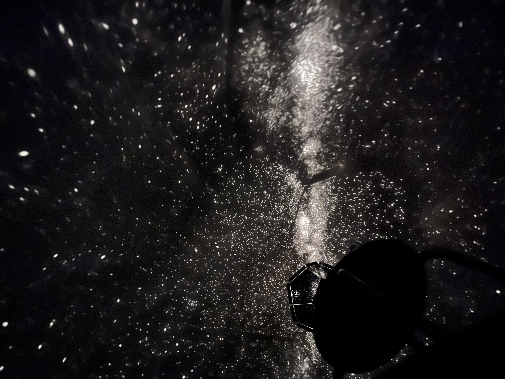

オリオン座は冬の夜空を代表する星座のひとつで、狩人オリオンの姿を表現しています。 この星の特徴は中央に3つの星が並んだ"三ツ星"が輝いていることです。 また、右肩の赤い１等星は"ベテルギウス"と呼ばれています。
おおいぬ座の特徴は何といっても１等星の中でも最も明るい星である"シリウス"です。 神話上でオリオン座の連れていた猟犬がモデルとなっており、星座になっても主 であるオリオンに仕えています。
こいぬ座は真冬から晩春にかけて見ることができる星座です。小さく、他の星と紛れてわかりにくい星座ですが、 １等星の"プロキオン"が目印になっています。神話上では、魔法によって変えられてしまった飼い主を食べてしまった ことを可哀そうに思われ、神に空へ浮かばせ星座にしました。
冬の大三角は、上記で示した３つの明るい星、ベテルギウス・シリウス・プロキオン を結んだ三角形です。冬の天の川の中に位置しており、数多の星の中に輝く１等星を結んでできるため、とても幻想的に見えます。 実際に探す際は、オリオン座のベテルギウスが赤色なので目印にしましょう。 下の写真が実際に撮影した写真です。
モバイルプラネタリウムを利用することで室内で気軽にプラネタリウムを楽しむことができます。 下の写真は第一回のStarPartyで撮影した写真です。このようなきれいな星々を見にきませんか？ みんなで、テントの中で星を鑑賞しましょう！
